Contents
- Point Process Network Simulation
- 2 Neuron Network
- Baseline firing rate of the neurons being modeled
- History Effect
- Stimulus Effect
- Ensemble Effect
- Stimulus
- Simulate the Network
- GLM Model Fitting Setup
- GLM Model Fitting and Results
- Programmatic schematics + self-history kernel (issue #86)
- Self-history kernel
- Two-neuron connectivity diagram
- CIF block diagram + equation panel
% Author: Iahn Cajigas % Date: 2/10/2014
Point Process Network Simulation
In order to understand how the point process GLM framework can be used to estimate the network connectivity within a population of neurons, we simulate a network of 2 neurons.


This block diagram specifies a conditional intensity function of the form
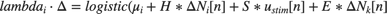
where,
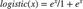
. Note that * is the convolution opertator.2 Neuron Network
close all; clear all; close all; Ts=.001; %Sample Time tMin=0; tMax=50; %Simulation duration t=tMin:Ts:tMax; numNeurons=2;
Baseline firing rate of the neurons being modeled
close all;
mu{1}=-3;
mu{2}=-3;
History Effect
close all; % Captures how the firing of a neuron at modulates its probability of % firing. Captures effects such as the refractory period and bursting. We % use the same firing history for both neurons in this example. Note that % the firing activity at time n leads to strong inhibition at time n+1 % (refractory period) and that this effect becomes smaller over the next % two time periods.
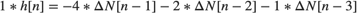
Note that the one sample delay in same cell firing is included in the simulink model.
H{1}=tf([-4 -2 -1],[1],Ts,'Variable','z^-1');
H{2}=tf([-4 -2 -1],[1],Ts,'Variable','z^-1');
Stimulus Effect
close all;
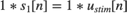
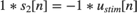
Neuron 1 is positively modulated by the stimulus
S{1}=tf([1],1,Ts,'Variable','z^-1');
% Neuron 1 is negatively modulated by the stimulus
S{2}=tf([-1],1,Ts,'Variable','z^-1');
Ensemble Effect
close all; % Captures the effect of how neighboring neuron firing modulates the firing % of a given neuron.
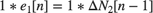
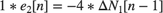
Note that the one sample delay in firing of the neighbor cell is included in the simulink model.
%Neuron 2 firing positively modulates Neuron 1 E{1}=tf([1],1,Ts,'Variable','z^-1'); %Neuron 1 firing has strong inhibitory effect on neuron 2. E{2}=tf([-4],1,Ts,'Variable','z^-1');
Stimulus
close all; % We use a simple sine wave here but we may want to explore other types of % inputs to see if they affect the recovery of the network parameters. f=1; %Stimulus frequency [Hz] u = sin(2*pi*f*t)'; %Make this neuron modulated by a sine wave stim=Covariate(t',u,'Stimulus','time','s','Voltage',{'sin'}); % Map the variables to the Simulink model assignin('base','S1',S{1}); assignin('base','H1',H{1}); assignin('base','E1',E{1}); assignin('base','mu1',mu{1}); assignin('base','S2',S{2}); assignin('base','H2',H{2}); assignin('base','E2',E{2}); assignin('base','mu2',mu{2}); % FIX: replaced simget with [] (default options); simget deprecated R2016a
Simulate the Network
close all; % Uses a binomial model for the conditional intensity function % nSTAT supports poisson model too but this simulink model simulates the % firing using a binomial model fitType = 'binomial'; if(strcmp(fitType,'binomial')) Algorithm = 'BNLRCG'; else Algorithm ='GLM'; end [tout,~,yout] = sim('SimulatedNetwork2',[stim.minTime stim.maxTime], ... [],stim.dataToStructure); clear nst; for i=1:numNeurons spikeTimes = tout(yout(:,i)>.5); %find the spike times nst{i} = nspikeTrain(spikeTimes); end sC=nstColl(nst); sC.setMinTime(stim.minTime); sC.setMaxTime(stim.maxTime); figure; subplot(2,1,1); sC.plot; v=axis; axis([0 tMax/10 v(3) v(4)]); subplot(2,1,2); stim.plot; v=axis; axis([0 tMax/10 v(3) v(4)]);
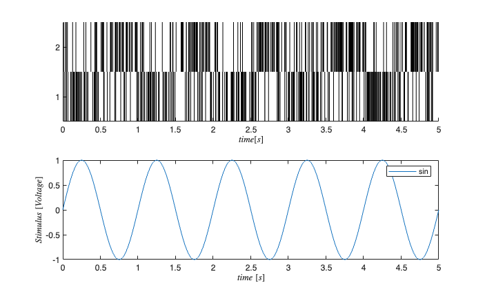
GLM Model Fitting Setup
close all; % In this section, we create the appropriate structures to fit several GLM % models to the data generated above. % Create a constant covariate representing the mean firing rate $$\mu_{i}$ baseline=Covariate(t',ones(length(t),1),'Baseline','time','s','',{'mu'}); spikeColl = sC; %Use the generated data as our collection of spikes %Use stimulation and baseline as possible covariates cc=CovColl({stim,baseline}); trial = Trial(spikeColl,cc); sampleRate = 1/Ts; %Create trial % trial.setTrialPartition([0 tMax/2 tMax]);
GLM Model Fitting and Results
close all; clear c; % We know the history effect goes back 3 lag orders selfHist = [0:1:3]*Ts; % only have an effect at the 1ms lag. This captures the effect of the % firing of neuron 1 on neuron 2 and vice versa. ensHist = [0 1]*Ts; sampleRate = 1/Ts; %Lets compare three models of increasing complexity for each neuron % When results are shown, ]ambda_1 corresponds to the CIF obtained from the % c{1}, lambda_2 to c{2} etc. % Fit only a mean firing rate c{1} = TrialConfig({{'Baseline','mu'}},sampleRate,[],[]); c{1}.setName('Baseline'); % Fit a constant rate and ensemble model c{2} = TrialConfig({{'Baseline','mu'}},sampleRate,[],ensHist); c{2}.setName('Baseline+EnsHist'); % Fit the correct/exact model c{3} = TrialConfig({{'Baseline','mu'},{'Stimulus','sin'}},sampleRate,... selfHist,ensHist); c{3}.setName('Stim+Hist+EnsHist'); % Place all configurations together and run analysis for each neuron cfgColl= ConfigColl(c); results = Analysis.RunAnalysisForAllNeurons(trial,cfgColl,0,Algorithm); % Visualize the Results results{1}.plotResults; results{2}.plotResults; Summary = FitResSummary(results); % Summary.plotSummary; % Construct an image of the Actual vs. Estimated Network actNetwork = zeros(numNeurons,numNeurons); network1ms = zeros(numNeurons,numNeurons); for i=1:numNeurons index = 1:numNeurons; neighbors = setdiff(index,i); [num,den] = tfdata(E{i}); actNetwork(i,neighbors) = cell2mat(num); % Coefficients in the 2rd Analysis correspond to the estimated % connection weights. % See labels after running command: [coeffs,labels]=results{i}.getCoeffs; [coeffs,labels]=results{i}.getCoeffs; network1ms(i,neighbors)=coeffs(1:(length(neighbors)),3); end maxVal=max(max(abs(actNetwork))); minVal=-maxVal;%min(min(actNetwork)); CLIM = [minVal maxVal]; figure; colormap(jet); subplot(1,2,1); imagesc(actNetwork,CLIM); set(gca,'XTick',index,'YTick',index); title('Actual'); subplot(1,2,2); imagesc(network1ms,CLIM); set(gca,'XTick',index,'YTick',index); title('Estimated 1ms');
Analyzing Configuration #1: Neuron #1,2 Analyzing Configuration #2: Neuron #1,2 Analyzing Configuration #3: Neuron #1,2
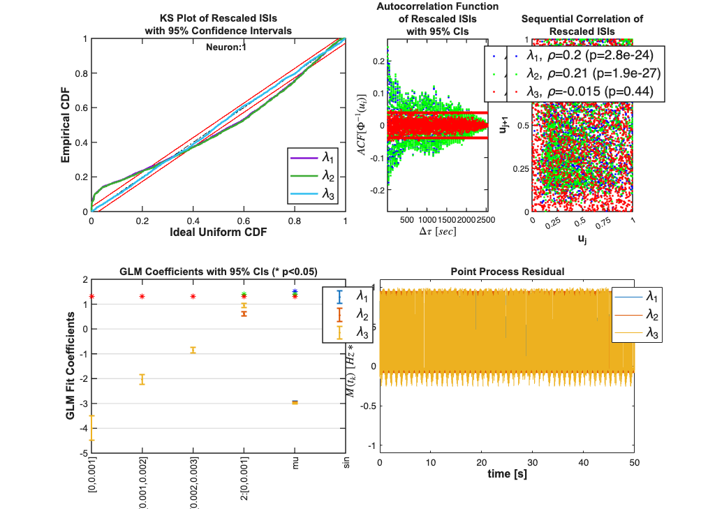
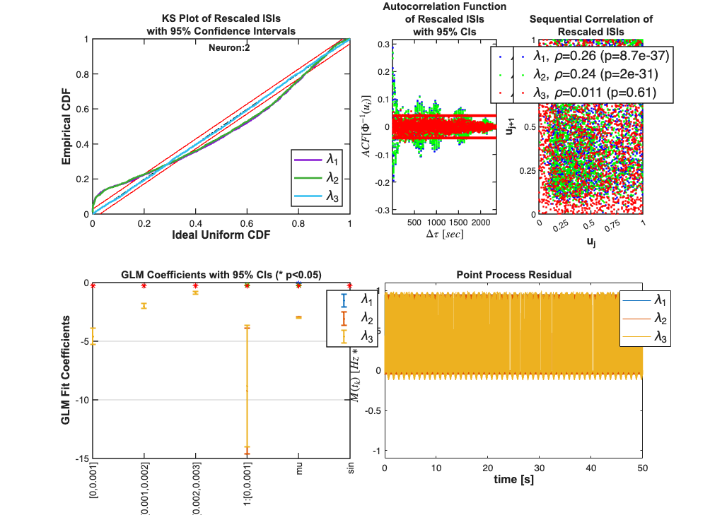
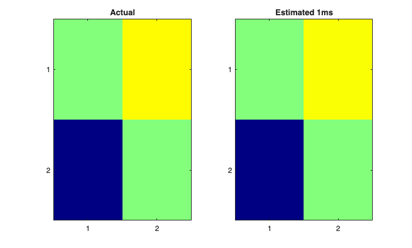
Note: by default all neurons are considered to be potential neighbors. If this is not the case, you can call trial.setNeighbors(neighborArray) where neighborArray is a matrix that in the ith row has ones in the columns of those neurons considered to be potential neighbors and zeros otherwise. By default neighborArray has 0 only on the diagonal, so that the ith neuron cannot be its own neighbor, and 1 ones elsewhere.
Programmatic schematics + self-history kernel (issue #86)
close all; % The connectivity diagram, CIF block diagram, and self-history kernel below % are *generated from the workspace* (mu, H, S, E). Edit those variables % above and re-run -- the schematics update. % Extract numeric coefficients from the tf objects H_kernel = H{1}.Numerator{1}; S1_gain = S{1}.Numerator{1}; S2_gain = S{2}.Numerator{1}; E1_gain = E{1}.Numerator{1}; E2_gain = E{2}.Numerator{1};
Self-history kernel
close all; % The only multi-tap filter in the model. Stem plot makes the refractory + % decay structure immediately legible vs the abstract TeX vector form. figure; stem(1:length(H_kernel), H_kernel, 'filled', 'LineWidth', 1.5); xlabel('lag (bins)'); ylabel('H_i'); title(sprintf('Self-history kernel H = [%s]', sprintf('%g ', H_kernel))); grid on;
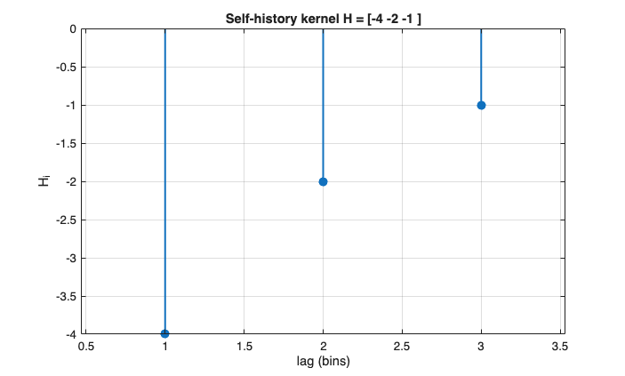
Two-neuron connectivity diagram
close all; % Programmatic redraw. Carries baseline mu, stimulus weight S, and ensemble % weight E directly on the node labels and the inter-neuron arrows. figure; hold on; axis equal; axis([-2.2 2.2 -1.6 1.6]); axis off; theta = linspace(0, 2*pi, 60); plot(-1 + 0.28*cos(theta), 0 + 0.28*sin(theta), 'b','LineWidth',2); plot( 1 + 0.28*cos(theta), 0 + 0.28*sin(theta), 'r','LineWidth',2); text(-1, 0, 'N_1','HorizontalAlignment','center','FontWeight','bold','FontSize',14); text( 1, 0, 'N_2','HorizontalAlignment','center','FontWeight','bold','FontSize',14); text(-1, 0.6, sprintf('\\mu_1=%g', mu{1}),'HorizontalAlignment','center'); text( 1, 0.6, sprintf('\\mu_2=%g', mu{2}),'HorizontalAlignment','center'); text(-1,-0.6, sprintf('S_1=%+g', S1_gain),'HorizontalAlignment','center'); text( 1,-0.6, sprintf('S_2=%+g', S2_gain),'HorizontalAlignment','center'); text(-1, 1.05, sprintf('H=[%s]', sprintf('%g ',H_kernel)),'HorizontalAlignment','center','Color',[0.4 0.4 0.4]); text( 1, 1.05, sprintf('H=[%s]', sprintf('%g ',H_kernel)),'HorizontalAlignment','center','Color',[0.4 0.4 0.4]); % Ensemble arrows (curved-ish with quiver) quiver(-0.7, 0.12, 1.4, 0, 0, 'Color',[0 0.5 0],'LineWidth',1.5,'MaxHeadSize',0.25); text(0, 0.3, sprintf('E_{1\\leftarrow 2}=%+g', E1_gain),'HorizontalAlignment','center','Color',[0 0.5 0]); quiver( 0.7,-0.12, -1.4, 0, 0, 'Color',[0.6 0 0],'LineWidth',1.5,'MaxHeadSize',0.25); text(0, -0.3, sprintf('E_{2\\leftarrow 1}=%+g', E2_gain),'HorizontalAlignment','center','Color',[0.6 0 0]); title('Two-neuron connectivity (workspace-synced)');
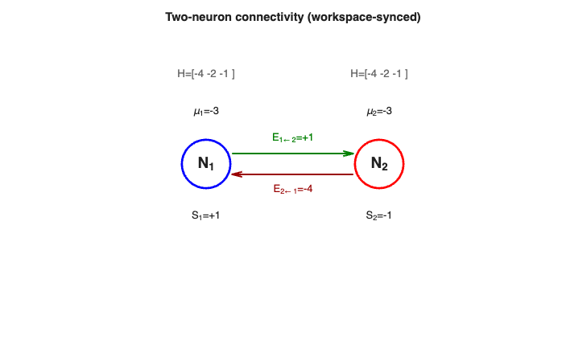
CIF block diagram + equation panel
close all; % Shows the four additive contributions feeding the logistic link, with % workspace values populating the labels. figure; hold on; axis([0 10 0 6]); axis off; boxes = {'Baseline \mu_i', 'History H_i', 'Stimulus S_i', 'Ensemble E_i'}; for k = 1:4 rectangle('Position',[0.5 5-k*1.1 2.2 0.9],'Curvature',0.15,'LineWidth',1.3); text(1.6, 5-k*1.1+0.45, boxes{k},'HorizontalAlignment','center','FontWeight','bold'); end % Summation node rectangle('Position',[4.5 2.2 1 1],'Curvature',1,'LineWidth',1.3); text(5,2.7,'\Sigma','HorizontalAlignment','center','FontSize',16,'FontWeight','bold'); % Logistic node rectangle('Position',[7 2.2 2 1],'Curvature',0.2,'LineWidth',1.3); text(8, 2.7, '\sigma(\cdot) = logistic','HorizontalAlignment','center','FontWeight','bold'); % Arrows in for k = 1:4 quiver(2.8, 5-k*1.1+0.45, 1.7, 2.7-(5-k*1.1+0.45), 0, 'k','LineWidth',1.2,'MaxHeadSize',0.4); end quiver(5.6, 2.7, 1.35, 0, 0, 'k','LineWidth',1.5,'MaxHeadSize',0.4); text(8.0, 1.6, '\lambda_i\cdot\Delta', 'HorizontalAlignment','center'); text(5, 5.7, sprintf(['Numeric values - N_1: \\mu=%g, S=%+g, E=%+g ' ... 'N_2: \\mu=%g, S=%+g, E=%+g'], mu{1}, S1_gain, E1_gain, mu{2}, S2_gain, E2_gain), ... 'HorizontalAlignment','center','FontSize',9,'Color',[0.3 0.3 0.3]); title('CIF block diagram - \lambda_i\Delta = \sigma(\mu_i + H_i*\Delta N_i + S_i u_{stim} + E_i\Delta N_k)');
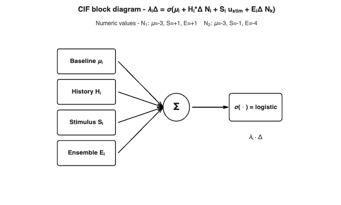